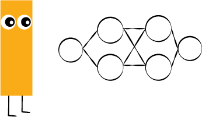

Neural Network Trainer
Train a live neural network and watch it drive real (or virtual) hardware.

Lesson details
Challenge
Build your first neural network from scratch and watch it turn inputs into outputs, layer by layer.

Think Like a programmer
How does changing one weight change the whole network's output?
Think Like an Anthropologist
Try out adding and removing nodes. How does that change the output? Can you figure out what the different types of nodes do?
Getting Started
- Add one input and one output to start with the simplest possible network.
- Click "Randomize weights," then press Run and watch the output change.
- Add a hidden layer and see how the diagram grows.
Devices
Fit
Loss